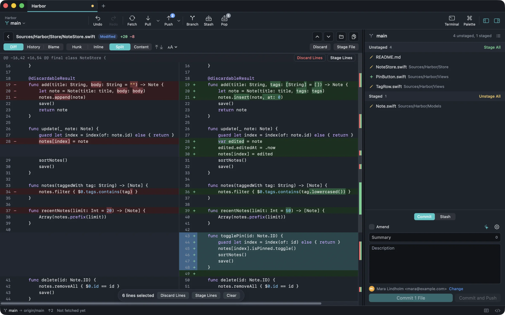
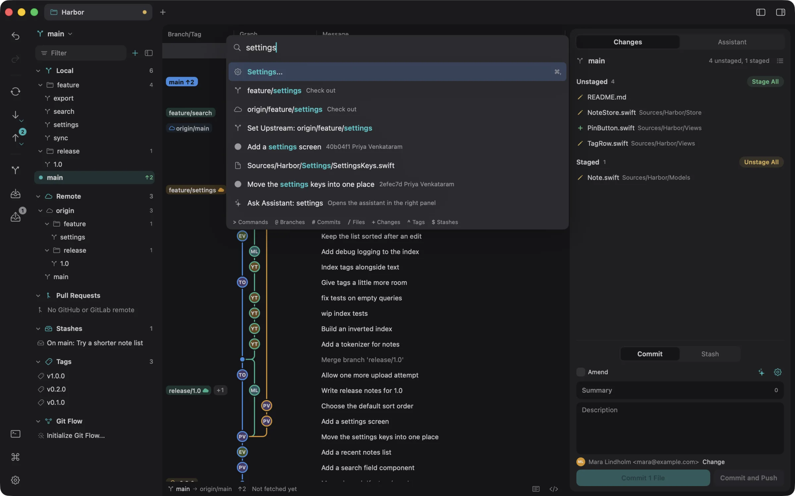
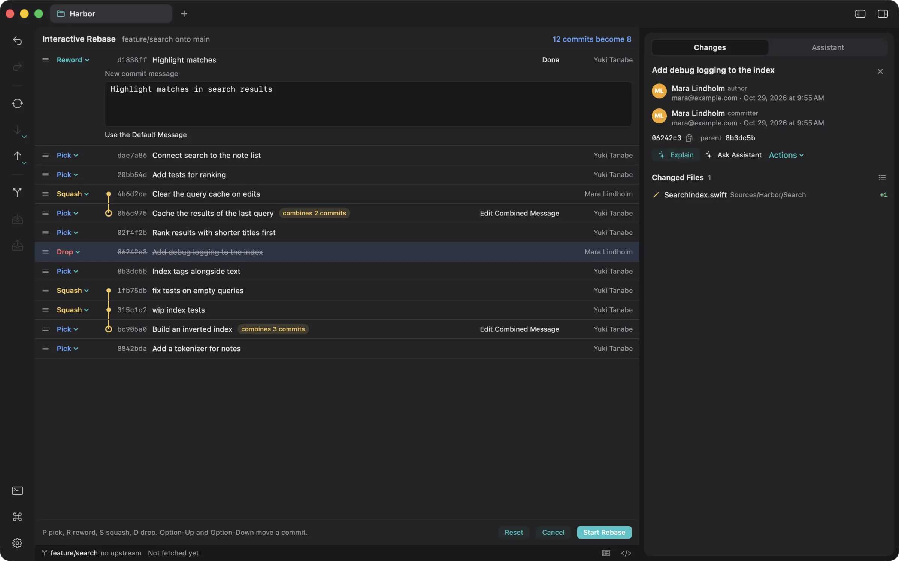
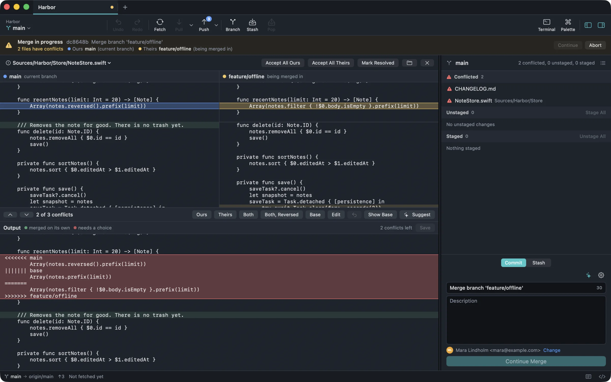

See the whole repository at once.
Lanes keep each branch straight, so history stays readable. Search it, manage the columns, and hide or solo branches. Drag one ref onto another to merge or rebase.
v2.0.0 A complete rewrite, for Mac
A native Git client with a commit graph you can actually read, staging down to the line, and undo for when a move goes wrong.
Everyday Git is free. The 14-day Pro trial for eligible new subscribers starts only after you confirm it in the app.
Lanes keep each branch straight, so history stays readable. Search it, manage the columns, and hide or solo branches. Drag one ref onto another to merge or rebase.
Read side-by-side diffs, then stage a file, a hunk, or a single line. File history and blame sit one tab away.

One palette finds commands, branches, commits, files, changes, tags, and stashes. Type a prefix to narrow it down.

Reorder, reword, squash, and drop commits in a list that shows what you will end up with, before anything runs.

A three-way editor shows both sides and the merged output. Pick ours, theirs, both, or base for each change, and get warned about conflicts before you merge.

Change an action and watch the history on the right update. This is how interactive rebase feels in Branchlane Pro: the outcome is visible before you commit to it.
P pick S squash D drop
Merging and rebasing start with a drag on the graph. Create, switch, and delete branches with the repository state in full view.
Commits, resets, merges, rebases, and discarded changes can be undone and redone. Local changes are snapshotted first.
Your Mac talks to your remote over SSH or HTTPS. Nothing goes through a service in between.
Draft commit messages and explain changes with your own local model, API key, or Apple's on-device model. Nothing is sent unless you ask.
Repository data leaves your Mac only when you ask, and only to the place you chose.
Branchlane 2.0 has a new Git engine and a new interface.
Staging, committing, branching, merging, syncing, and undo and redo work without a subscription.
Lanes that keep a branch straight, column management, search, and hide or solo for branches.
A visual interactive rebase and a three-way conflict editor, plus conflict warnings before you merge.
Pull requests and issues on GitHub and GitLab with your own token, and AI with the model you pick.
Sold only on the App Store. No account, license key, team seat, or separate billing portal.
$0forever
No trial or payment required.
Download free$19.99first year
Then $29.99 per year, or $3.99 per month. ₩29,000, then ₩39,000 per year, or ₩4,900 per month in Korea.
Start 14-day free trialDownload Branchlane for free and use it for everyday Git. Start Pro only when you want the advanced tools.